宠宠物数字身份健康卡
宠物品种
知识图谱
猫咪品种
猫咪图谱已开放狗狗品种
狗狗图谱已开放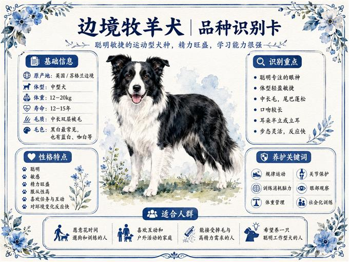
边牧犬
查看图谱中型犬 · 高运动量 · 聪明敏捷
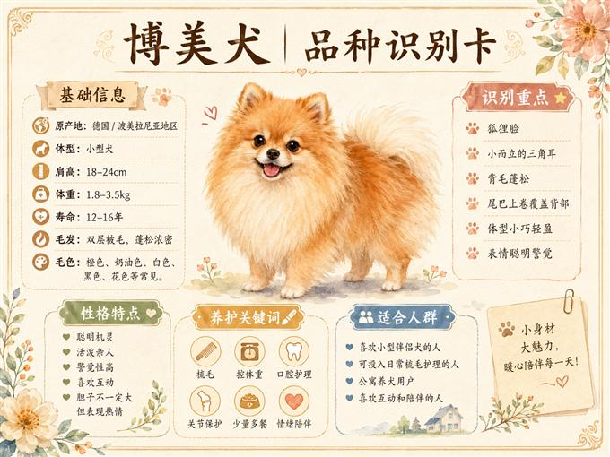
博美犬
查看图谱小型犬 · 毛量丰富 · 警觉活泼
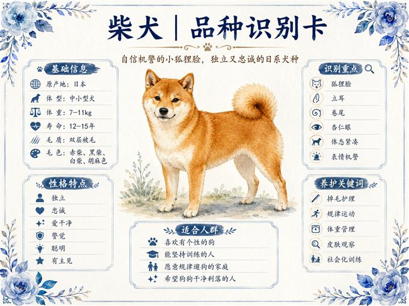
柴犬
查看图谱中小型犬 · 皮肤肠胃 · 独立警觉
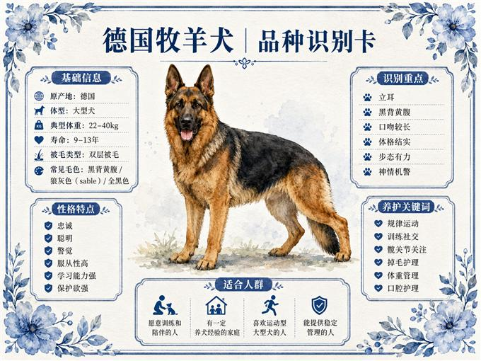
德牧犬
查看图谱大型犬 · 运动训练 · 服从性强
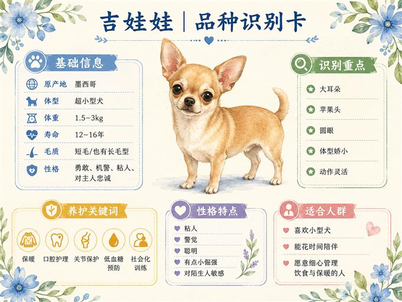
吉娃娃
查看图谱小型犬 · 保暖重点 · 敏感黏人
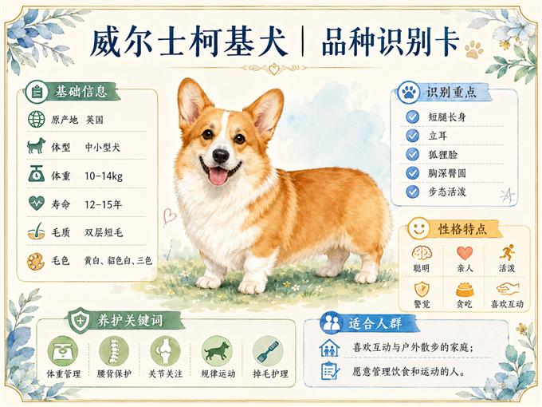
柯基犬
查看图谱小短腿 · 腰背关注 · 活泼亲人
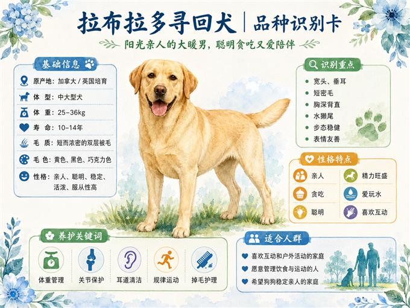
拉布拉多
查看图谱中大型犬 · 体重管理 · 亲人贪吃
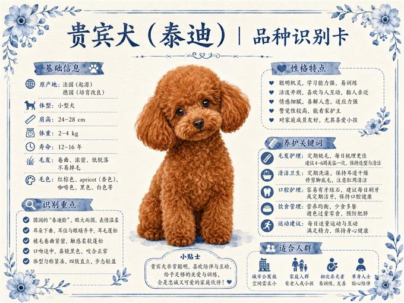
泰迪犬
查看图谱小型犬 · 口腔毛发 · 聪明黏人
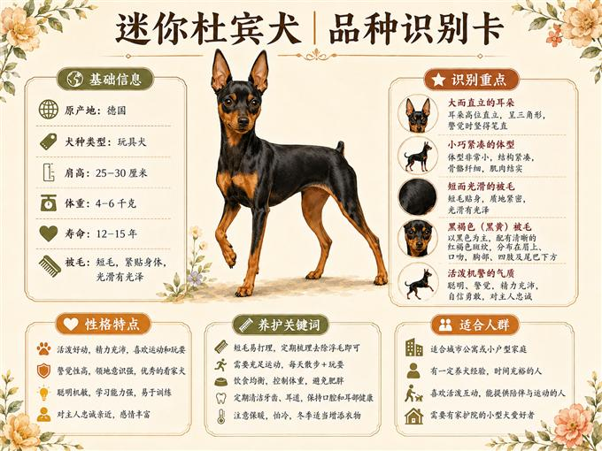
小鹿犬
查看图谱小型犬 · 运动灵活 · 精力旺盛
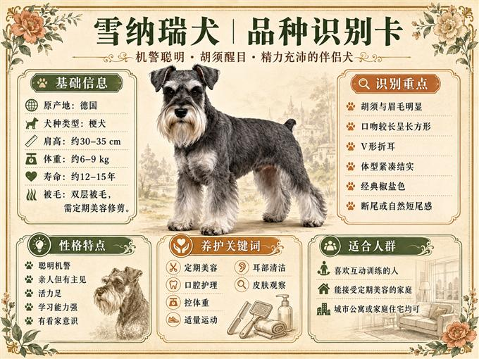
雪纳瑞
查看图谱小型犬 · 皮肤泌尿 · 警觉亲人
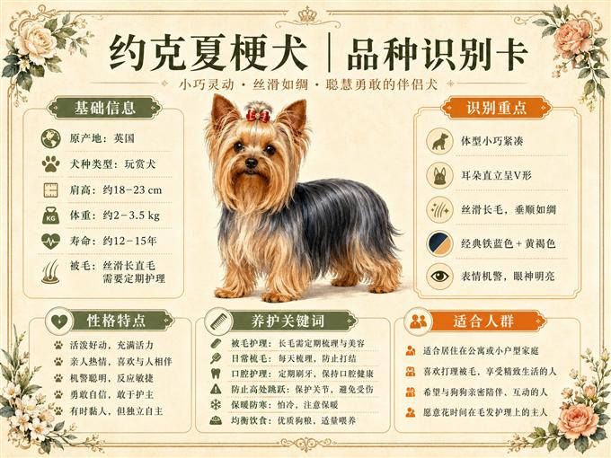
约克夏
查看图谱小型犬 · 牙齿护理 · 精致活泼
点击任一品种卡片，可查看对应的 7 张知识图谱。